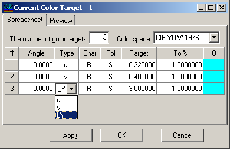

Modify Color Target
This option allows you to modify a color target function directly in memory.
When you initiate the Modify Color Target command from the Characterization menu, your changes are applied to the color target resident in memory, leaving the corresponding database color target unaffected. In this instance, the header of the editing window displays the words “Current Color Target.” You can restore the initial color target function at any time by reloading it from the Color Target database. To make the changes to the edited color target function permanent, you should save it in the Color Target database using the Save Color Target command from the Data menu.

The Apply button allows you to apply modifications without closing the window, while the OK button applies modifications and then closes this window.
See also: